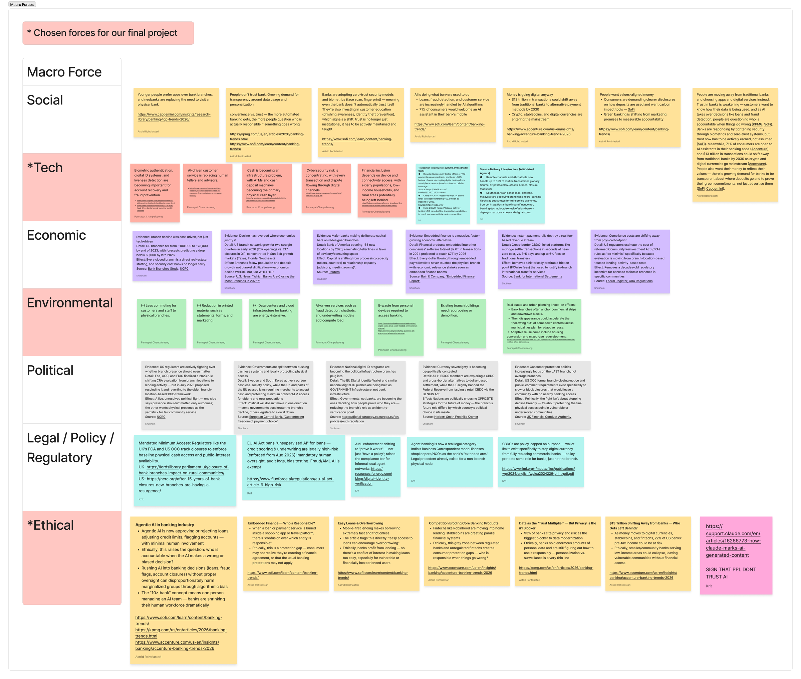
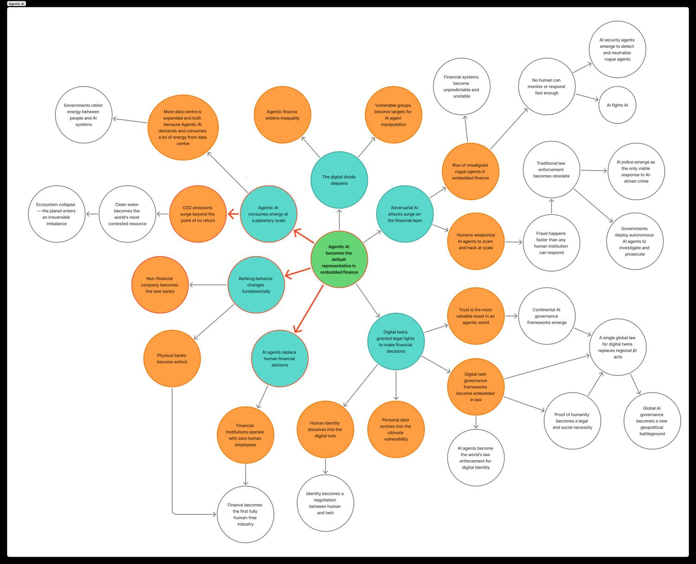
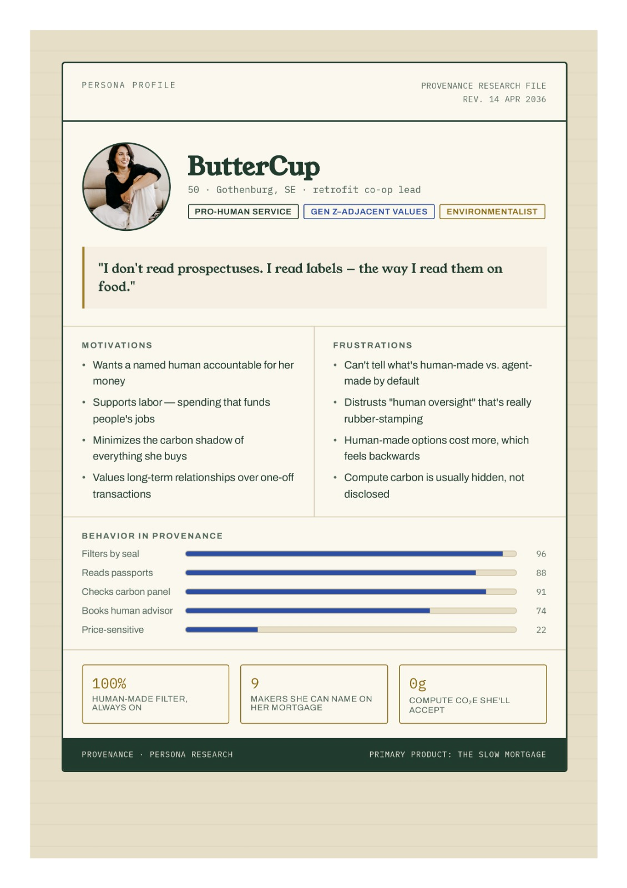
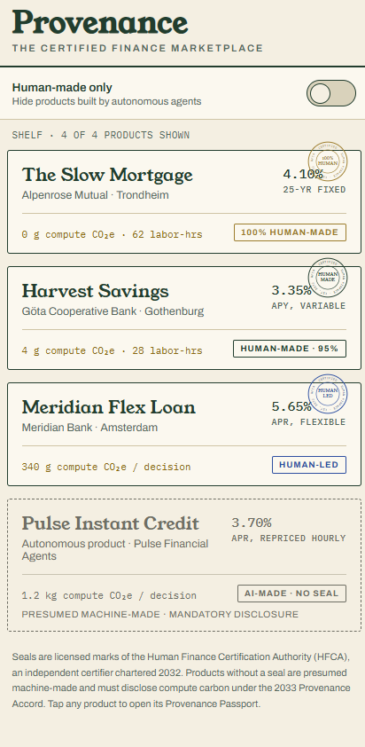
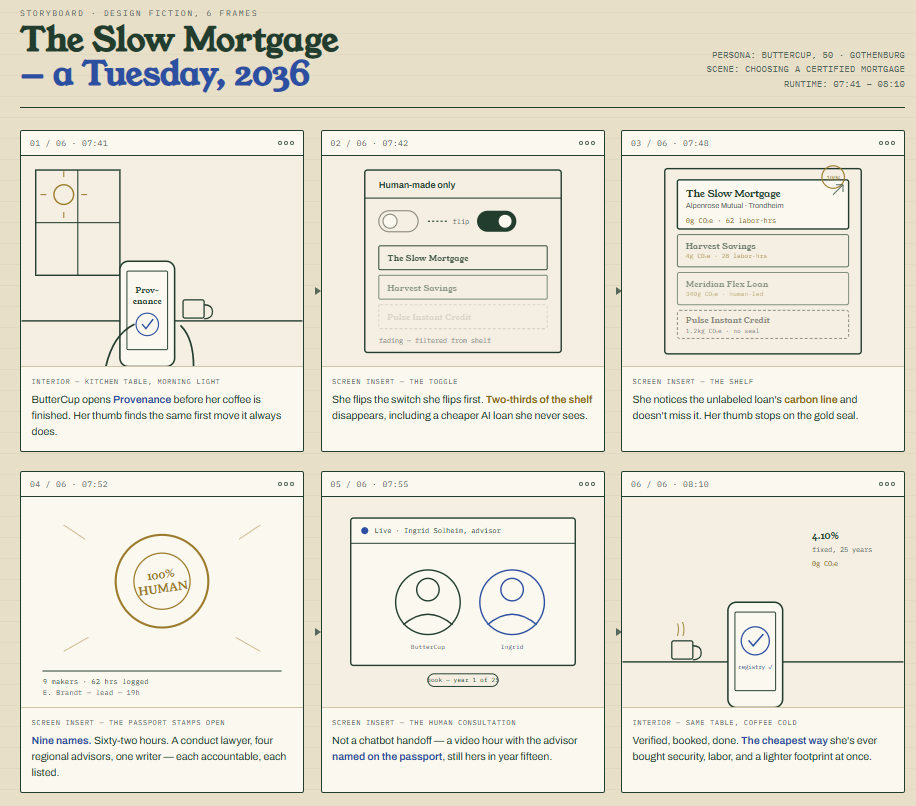
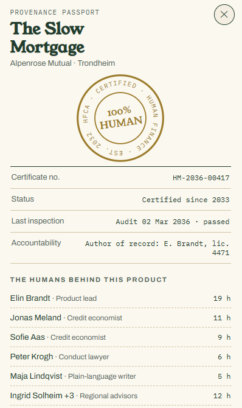
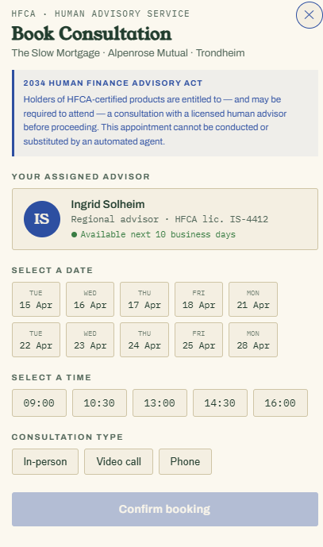
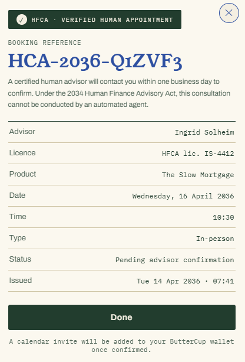

What if money needed an organic label?
By 2036, human-made finance is nearly extinct.
Our redesign: a certification system that keeps it alive.
Our chosen design: the human financial advisor — and with them, the human-made financial product.
Not obsolete for technical reasons: every macro domain pushes the same direction.
Every note on the board is sourced & dated — KPMG, Accenture, CFPB, Federal Reserve, EU AI Act.

Not a prediction — happening now, mostly unnoticed, buried inside shopping and travel apps.
A financial system that is cheap, instant, human-free — and carbon-heavy, opaque, unaccountable.

There was almost no one left to notice.
After 2031, regulators force every product to disclose its provenance — and a counter-market emerges: products conceived, priced, stress-tested and serviced by accountable humans.
It needs a label people can trust: the Human Finance Certification Authority, chartered 2032.
The USDA Organic of money.
ButterCup, 50 · Gothenburg · retrofit co-op lead.
Pro-human, environmentalist, Gen-Z-adjacent values.

| 100% HUMAN | Every decision by named humans — no generative or agentic AI anywhere. Rare, expensive, worn like a Michelin star. |
| HUMAN MADE | Human authorship of all product decisions; AI only in back-office chores. The everyday artisan seal. |
| HUMAN LED | AI drafts and analyzes — but a named author of record can reconstruct every decision and carries professional liability. |
| NO SEAL | Presumed machine-made. Must display automated status + compute-carbon figure. The absence of a label is itself a label. |
Per-product certificates · public registry · annual surprise audits · human-washing fined up to 4% of global revenue.





That's the price of security, employment, and carbon savings — in one product.
The redesign doesn't ban machine finance. It makes the choice visible, verifiable, and priced.
Group 5
Krit Ruechai · Pannapat Chanpaisaeng · Astrid Rohtriastari · Shubham Rajeshkumar Jariwala
Live prototype: tap any seal in the Provenance app — fully clickable.